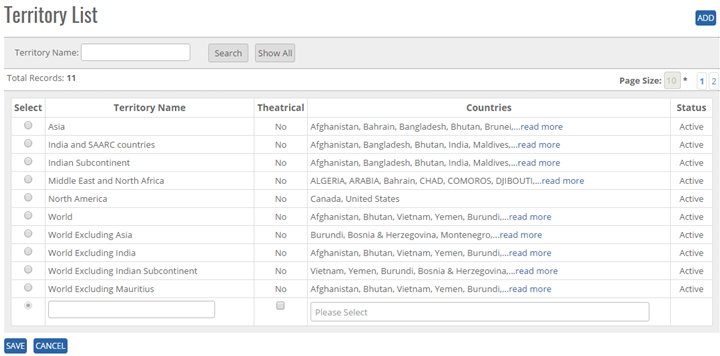
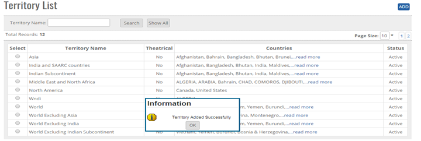
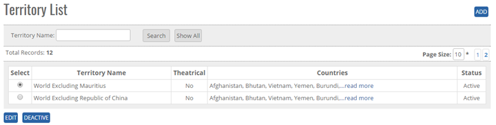

<section>
    <article>
        <h2>Territory<span></span></h2>
        <div>
            <p></p>
            <p>Territory module comes under <b>Master Module</b>. It can be accessed by user who has rights for this module.</p>
            <p>When user will click on territory tab, user is able to see the Territory module and country module. Country module comes under <b>Territory Module</b>.</p>
            <p>Go To >>Master >> Territory>>Territory List>><b>ADD</b></p>
            <p>Click on Add button at top right corner of the page and the following page will be open as below:</p>
            <div class="triangle-border top">
                
            </div>
            <p>User can add territory Name, can select multiple Countries, can update Theatrical and status will be default it will show Active as shown in above image</p>
            <p><b>To add territory in the system, System will be having following fields</b></p>

            <p>- User can enter Territory name in Text Box (alphanumeric is valid)</p>
            <p>- User can select Multiple Countries from the list Box</p>
            <p>- User can select Theatrical as option. If user clicks on Theatrical check box then Theatrical Circuits will be populated and if left unticked, it will populate list of Countries in System. Click on <b>Save</b> button user will get alert  message "<b>Territory Added Successfully</b>" message.</p>
            <div class="triangle-border top">
                
            </div>
            <p>Click on Cancel Button, the Record will not get updated.</p>
            <p><b>Note:</b> Territory Name will be Unique in the system.</p>

            <p><b>Modify Existing Territory</b></p>
            <p>Click on Edit, It will show Territory Name, Theatrical, Countries,(As added previously ) Search button, Show all button, Edit Button, De active button.</p>
            <p><b>Note:</b> By default Territory status will show ACTIVE.</p>
            <div class="triangle-border top">
                
            </div>
            <p>Go To >>Master>> Territory >> Search Territory Name >> Click Radio Button (Territory Name)>>EDIT. System will allow to edit all fields.</p>
            <p>- Click <b>Update</b> Button user will get alert message "<b>Territory Updated Successfully</b>".</p>
            <p>- Click <b>Cancel</b> Button record then the record will not get Updated.</p>
            <p><b>DeActivate/ Activate Existing Territory</b></p>
            <p><b>DeActive</b> - Click on Deactivate Button, once the button is clicked it will ask confirmation message "Are you sure you want to Deactivate this record" with "OK and cancel" button.</p>
            <p>If user clicks on OK Button, record will get deactivated and if clicked on Cancel, record will not get deactivated.</p>
            <p><b>Active</b> - Same way once a record is deactivated, system will show Active button. If user clicks on Active button, record will get activated.</p>
            <p><b>Search Territory</b></p>
            <p>- User can search the <b>Territory Name</b> and then click on search, it will show the result as per the search criteria. User can search name by single alphabet.</p>
            <p>- If user want to check all Territory name then click on <b>Show All</b> Button. It will show the list Click on page no, System will navigate the desired page, per page 10 records will be displayed.</p>
        </div>
    </article>
</section>